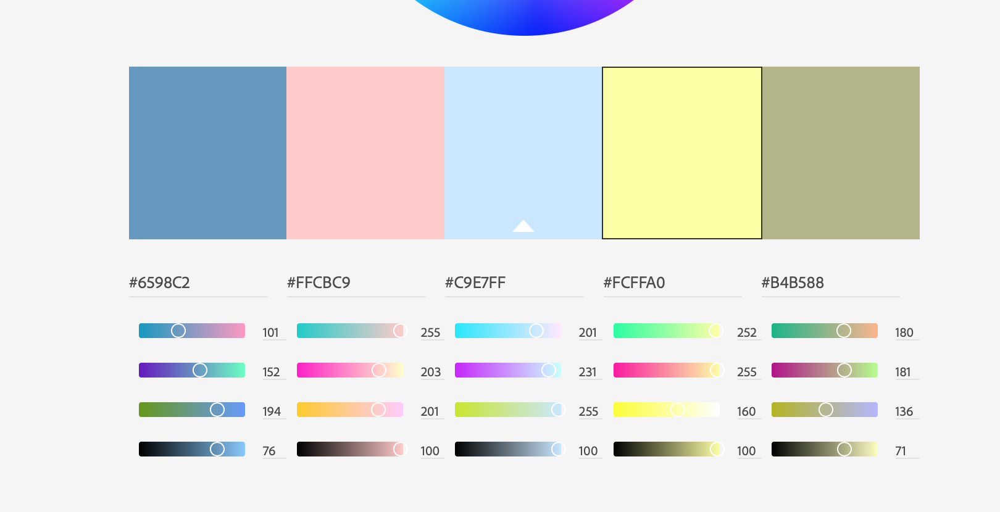

- For the background I will be using the light yellow.
- For the buttons I will be using the brown.
- For containers I will use the darker blue.
- Pink will be for anything I want to emphasize that is not part of the main theme
- The text will be black, but I will use the yellow and pink with a design find in the headers on certain pagers/li>